Nothing is true. Everything is permitted.
Scroll to SynchronizeStay your blade from the flesh of an innocent.
Trust not the blade, but the motive. All innocents are within the protection of the Creed.
The Creed
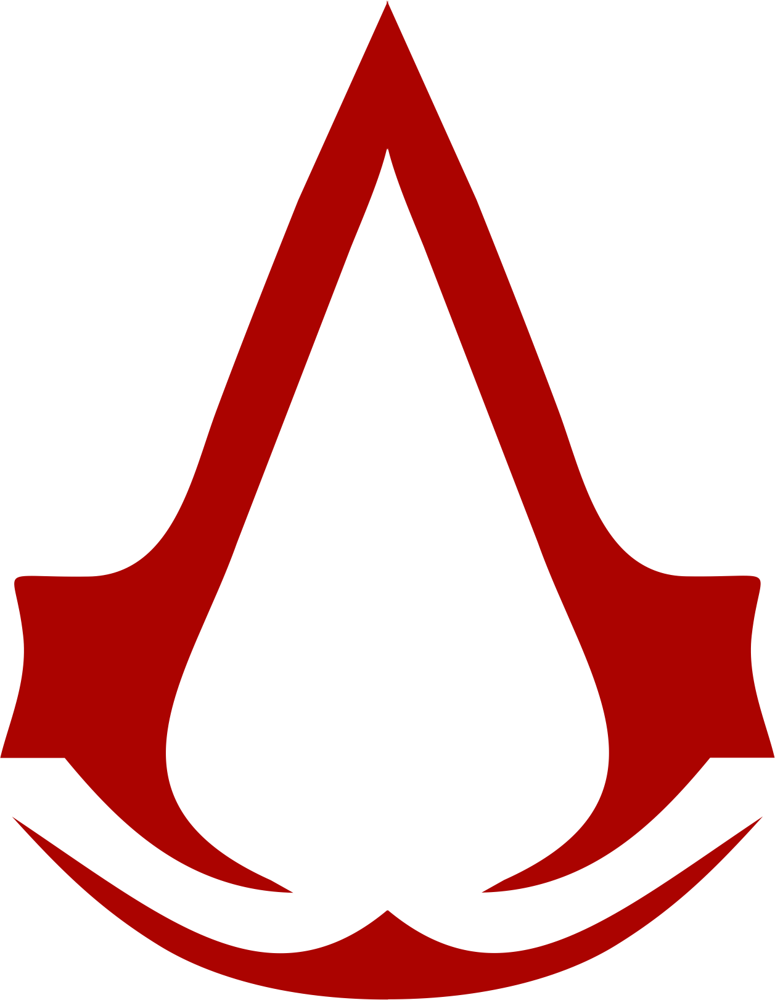
Hide in plain sight.
Be unseen. Blend with the crowd. Acknowledge the shadows. Be the hidden hand.
Never compromise the Brotherhood.
We stand or fall as one. Your actions reflect upon all. The order must prevail.
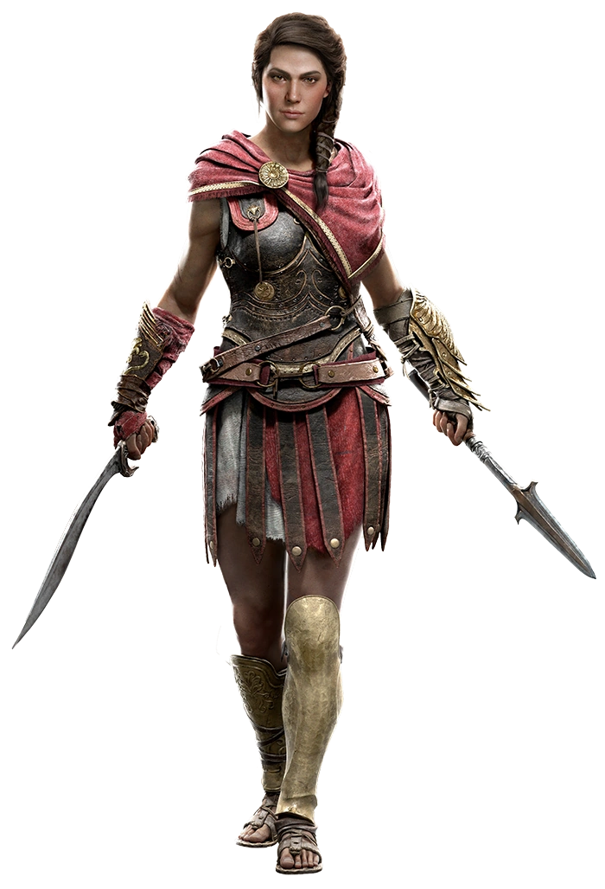
Kassandra
Assassin's Creed OdysseyKnown as the Eagle-Bearer, Kassandra is a Spartan-born mercenary ("Misthios") from the Peloponnesian War, wielding the Broken Spear of Leonidas, a powerful reliquia Isu of the First Civilization. Exiled after a tragic event in her youth, she navigated the conflicts of the ancient Greek world, uncovering the secrets of her bloodline and the foundations of what would become the Hidden Ones.
Her journey was one of epic tragedy and hidden truth, shaping the future of the world as she fought for order, facing the corrupted tendrils of the Cult of Cosmos. While she lived centuries before the official Assassin Brotherhood was formed, her choices and lineage laid the foundations, and her story remains a cornerstone of the Creed's long history.
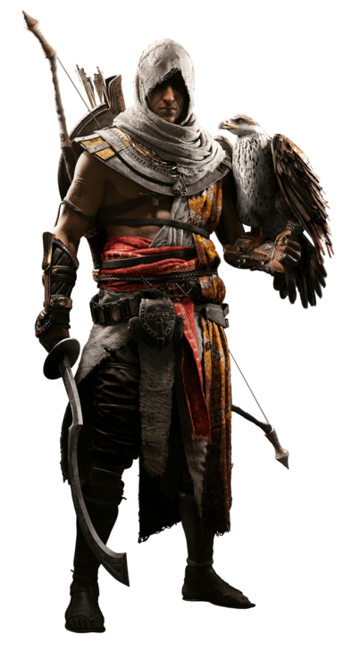
Bayek of Siwa
Assassin's Creed OriginsBayek of Siwa was one of the last Medjay of Egypt and, alongside his wife Aya, the co-founder of the Hidden Ones—the organization that would evolve into the Assassin Brotherhood. Serving as a protector of his people, his path turned into a quest for vengeance after a heartbreaking personal tragedy involving the mysterious Order of the Ancients.
Operating from the shadows of Egypt's majestic pyramids and golden deserts, Bayek's journey marked the transition from traditional protector to a shadow warrior. By discarding his title and establishing the first tenets of the Creed, he ensured that the fight for human free will would endure silently through the dark pages of history.
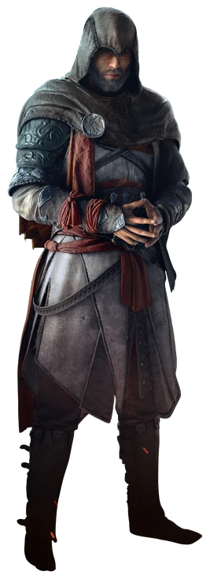
Basim Ibn Ishaq
Assassin's Creed MirageBorn in Baghdad, Basim Ibn Ishaq began his journey as a clever street thief, haunted by visions of a terrifying djinn. His life changed forever when he was recruited into the ancient ranks of the Hidden Ones by his mentor, Roshan, dedicating himself to their strict Creed and mastering the art of assassination from the shadows.
Operating during the Anarchy at Samarra, Basim grew to become one of the most lethal and resourceful Hidden Ones in history. However, his quest for justice and answers about his past eventually led him down a dark, fateful path, uncovering a profound connection to the First Civilization that would alter his destiny across generations.
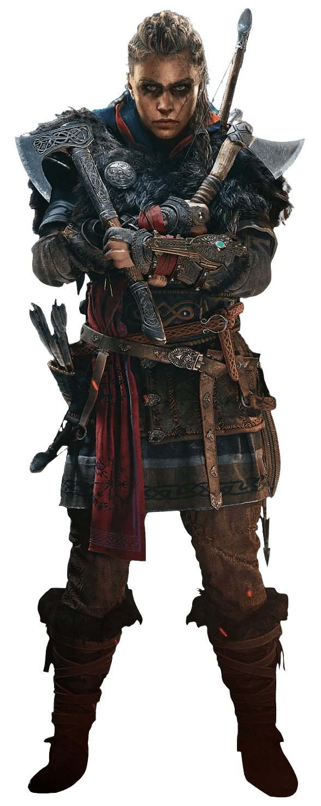
Eivor Varinsdottir
Assassin's Creed ValhallaKnown as the Wolf-Kissed, Eivor Varinsdottir was a fierce Norse Viking raider who led her clan away from the war-torn shores of Norway to establish a new future in the fractured kingdoms of England. Driven by loyalty to her clan and her adoptive brother Sigurd, her destiny intertwined with a historic conflict much larger than her own.
Though she closely fought alongside the Hidden Ones and wielded the iconic Hidden Blade with brutal efficiency, Eivor refused to formally join their ranks, remaining fiercely independent. Her alliances across Anglo-Saxon England reshaped the thrones of empires, while she fought to secure her clan's legacy and confront the echoes of her past.
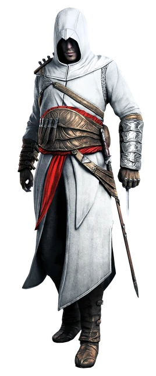
Altaïr Ibn-La'Ahad
Assassin's CreedBorn into the Levant Brotherhood, Altaïr Ibn-La'Ahad was a master assassin whose exceptional skills were matched only by his arrogance. After a reckless failure at Solomon's Temple violated the sacred tenets of the Assassin's Creed, he was stripped of his rank and forced by his Mentor, Al Mualim, to embark on a quest for redemption.
Hunting nine key targets across the Holy Land during the Third Crusade, Altaïr's journey humbled him, transforming him into a true leader. By questioning his targets and uncovering the truth behind the Apple of Eden, he revolutionized the Brotherhood from within, rewriting their codes and laying down the modern foundations of the Creed.
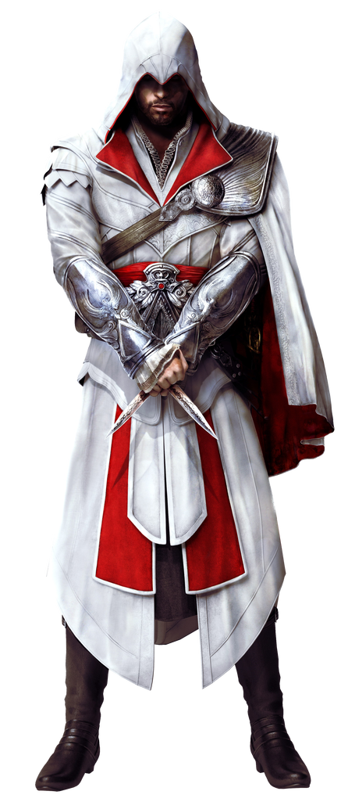
Ezio Auditore da Firenze
Assassin's Creed II - Assassin's Creed Brotherhood - Assassin's Creed RevelationsBorn into the nobility of Florence, Ezio Auditore's life was shattered when his father and brothers were unjustly executed. Seeking justice and fueled by vengeance, he discovered his family's hidden legacy within the Assassin Brotherhood, stepping into the robes of his ancestors to hunt down the conspirators behind the tragedy.
Over decades of relentless struggle against the Templar Order led by the Borgias, Ezio grew from a charismatic, hot-headed youth into a legendary Master Assassin and Mentor. His leadership united the Brotherhood across Italy, securing Rome and Venice, while his ultimate journey transformed him into the most revered figure in history.
1579 C.E. — Azuchi-Momoyama Period
Assassin's Creed ShadowsNaoe
A fierce and agile shinobi from the province of Iga, Naoe is the daughter of the legendary Fujibayashi Nagato. After her home is destroyed by Oda Nobunaga's forces, she embarks on a path of vengeance, mastering the arts of stealth, grappling hooks, and the Hidden Blade to fight for her people from the shadows.
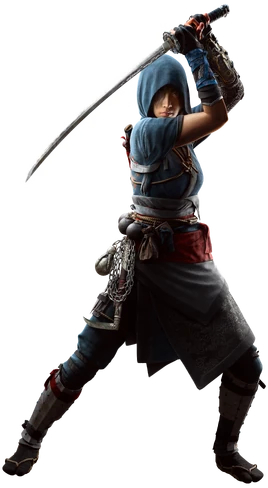
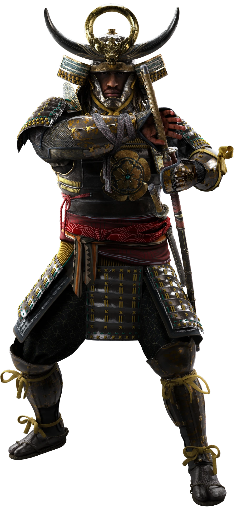
Yasuke
The legendary African samurai, Yasuke arrived in Japan and quickly rose through the ranks to serve the powerful daimyo Oda Nobunaga. Combining immense strength with disciplined swordplay, he fights with honor and heavy weaponry, finding a new purpose in a foreign land while his destiny crosses with Naoe's.
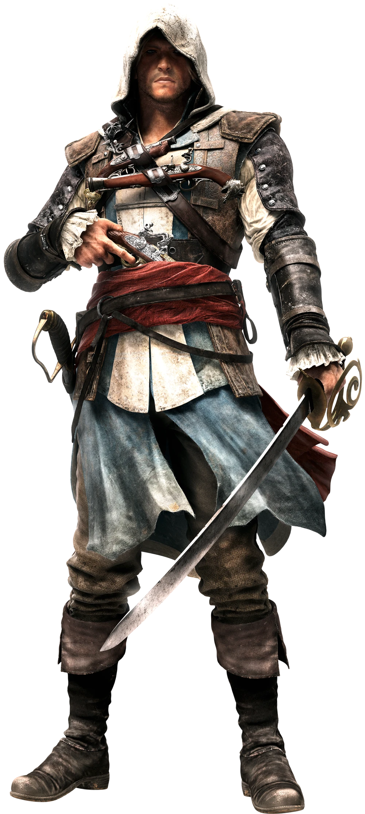
Edward Kenway
Assassin's Creed IV Black FlagA brash and charismatic Welsh pirate, Edward Kenway left his homeland for the West Indies in search of gold, glory, and notoriety. Sailing the Caribbean as the captain of the Jackdaw, his greed initially draws him into the ancient war between the Assassins and the Templars, tracking a mysterious place known only as the Observatory.
Though he initially wears the Assassin robes merely for profit and convenience, the devastating loss of his closest allies and the collapse of the pirate republic of Nassau force him to mature. Embracing the true meaning of the Creed, Edward transforms his selfish desires into a fight for freedom, becoming a legendary Master Assassin.
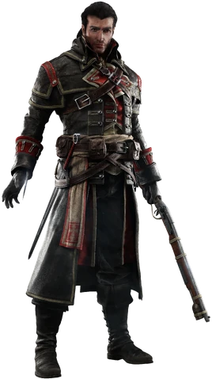
Shay Patrick Cormac
Assassin's Creed RogueInitially a young and questioning member of the Colonial Brotherhood of Assassins, Shay Patrick Cormac began to doubt the Brotherhood's methods after a catastrophic mission in Lisbon caused thousands of innocent deaths. Realizing his Mentor was willing to risk total destruction for Precursor artifacts, Shay broke his vows to protect the innocent.
Betrayed and left for dead, Shay was saved by Templars and chose to join the Templar Order as an Assassin Hunter. Wielding his lethal air rifle and captaining the Morrigan, he dedicated his life to hunting down his former brothers across North America, drastically reshaping the fate of both factions during the Seven Years' War.
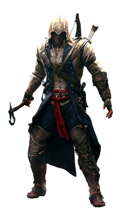
Ratonhnhaké:ton (Connor)
Assassin's Creed IIIBorn to a Kanien'kehá:ka (Mohawk) mother and the Templar Grand Master Haytham Kenway, Ratonhnhaké:ton grew up amidst the tension of Colonial America. After his village was burned during his childhood, he sought guidance from the Ancient One, leading him to Master Assassin Achilles Davenport to train in the ways of the Brotherhood.
Adopting the name Connor to blend into colonial society, he navigated the chaos of the American Revolution to protect his people's land and secure freedom for the emerging nation. Armed with his iconic Tomahawk, bow, and unwavering moral compass, Connor fought tirelessly against the Templar conspiracy, leaving a lasting legacy on the birth of America.
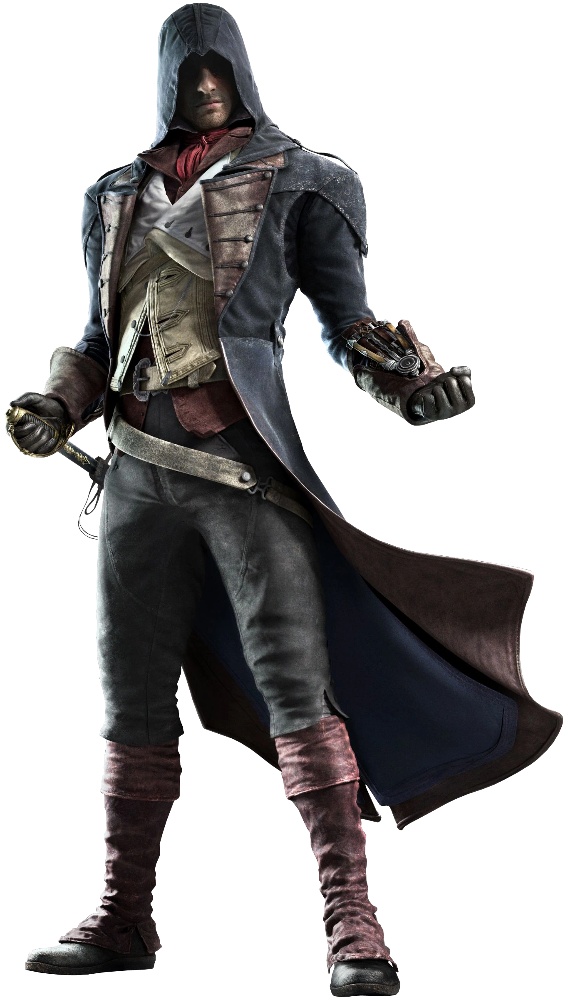
Arno Victor Dorian
Assassin's Creed UnityBorn into a noble French-Austrian family, Arno Victor Dorian suffered profound loss early in life with the murder of his father. Adopted by François de la Serre, the Grand Master of the French Templars, Arno grew up unaware of the ancient conflict—until his foster father was assassinated, framing Arno for the crime.
Imprisoned in the Bastille, Arno met the Assassin Bellec and joined the Parisian Brotherhood to redeem himself and uncover the true conspirators. Navigating the blood-soaked streets of Paris during the French Revolution, Arno wielded the Phantom Blade while torn between his loyalty to the Creed and his deep love for Élise de la Serre.
1868 C.E. — Industrial Revolution
Assassin's Creed SyndicateJacob Frye
A headstrong, charismatic, and reckless Master Assassin, Jacob Frye preferred action over philosophy. Determined to liberate Victorian London from the oppressive grip of Templar Grand Master Crawford Starrick, Jacob formed the "Rooks"—a powerful street gang—to take over the city's underworld district by district.
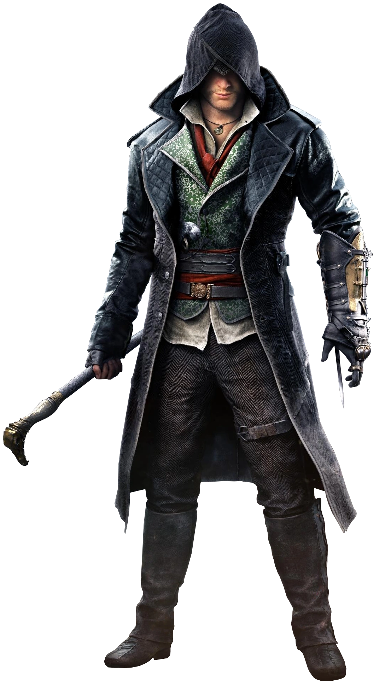
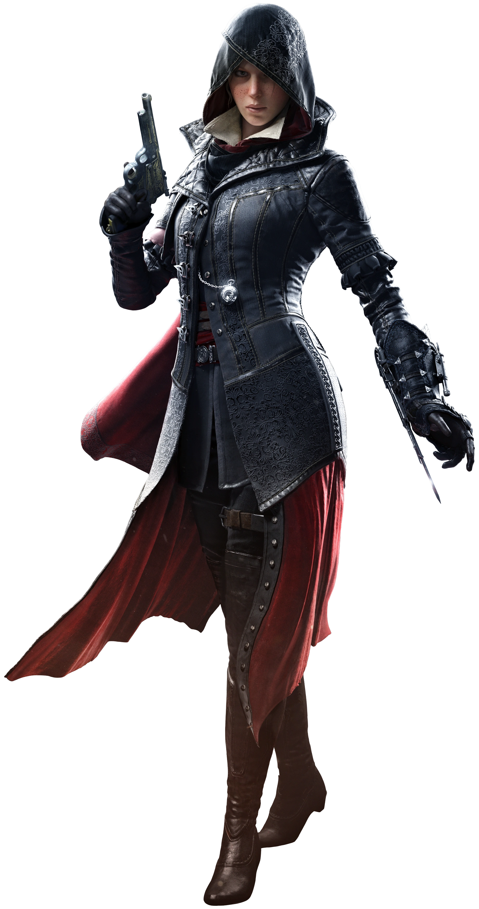
Evie Frye
The elder twin by four minutes, Evie Frye was a tactical, disciplined, and master of stealth who strictly adhered to the tenets of the Creed. While her brother fought in the streets, Evie focused on tracking down First Civilization artifacts, hunting the Shroud of Eden, and countering Templar schemes with surgical precision.
SYNCHRONIZATION
COMPLETE
MEMORY SEQUENCE RECONSTRUCTED
100%

ASSASSIN'S CREED BLACK FLAG RESYNCED
1715 C.E. — THE GOLDEN AGE OF PIRACY
Return to the West Indies and relive the legendary journey of Edward Kenway. Set sail across the Caribbean, command the Jackdaw, and experience the golden age of piracy synchronized in high definition.